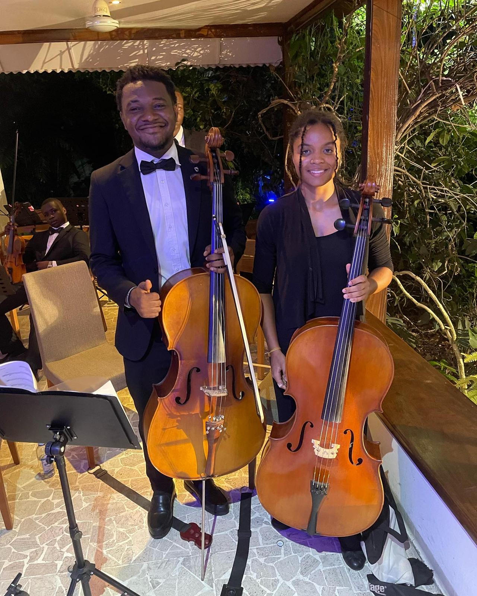
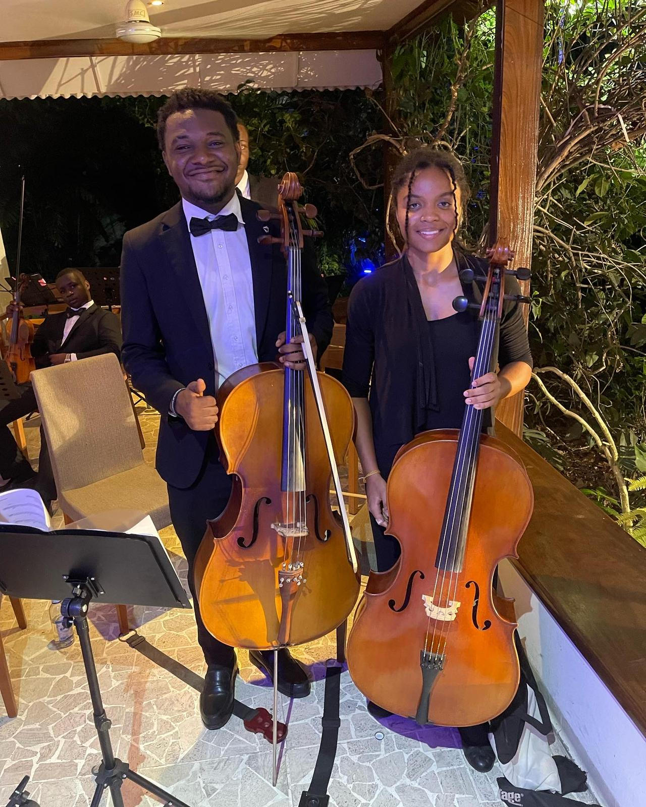

Fondé le 18 février 2023 par Nyombo Palangi Sylvain, violoniste passionné et visionnaire, l’Orchestre de Kinshasa est né du désir profond de valoriser les talents locaux
d’unir les artistes autour d’une cause culturelle forte et de bâtir un mouvement musical authentique enraciné au cœur de la capitale congolaise.
L’Orchestre de Kinshasa, c’est plus qu’un ensemble musical. C’est une voix qui redonne noblesse à nos racines et fait danser l’histoire au rythme du futur.
L’orchestre veut être un levier d’union et de transformation de la scène musicale congolaise. Il s’inscrit dans une démarche de promotion culturelle, de valorisation des talents locaux, et d’ouverture internationale.
- Créer un pont entre les générations musicales - Réconcilier musique classique et musiques africaines - Promouvoir le Made in Congo culturel - Devenir une référence panafricaine dans l’innovation orchestrale
 

- Excellence : une discipline artistique rigoureuse et assumée.
nouveau.
- Transmission : un espace intergénérationnel, de l’ancien vers le nouveau
- Innovation : des fusions inédites entre classique et moderne.
- Identité: une musique enracinée dans l’âme congolaise.
- Ouverture : des échanges culturels nationaux et internationaux.